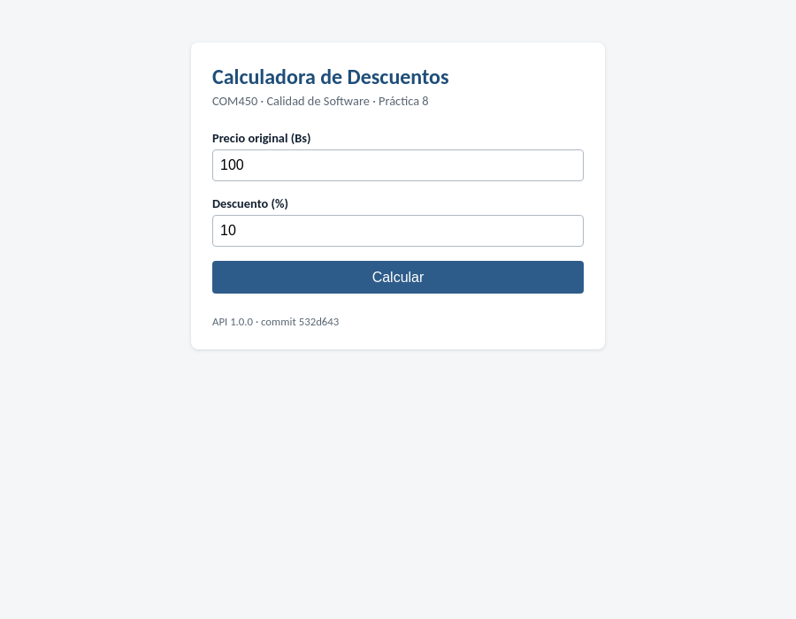
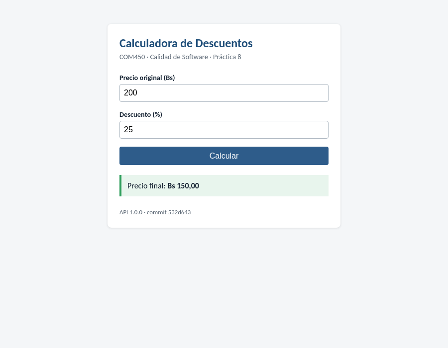
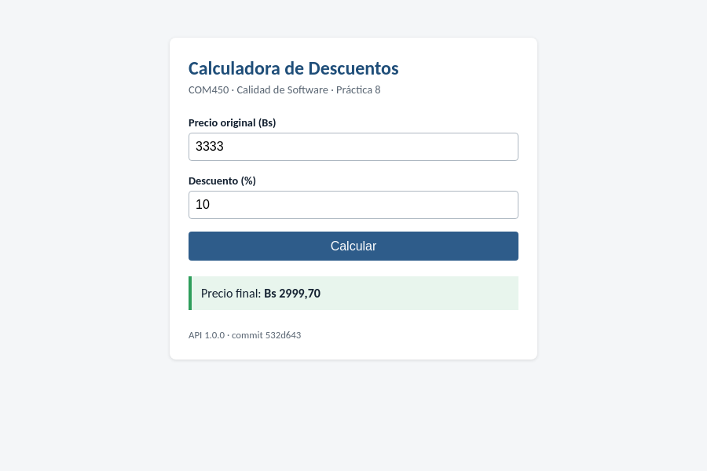
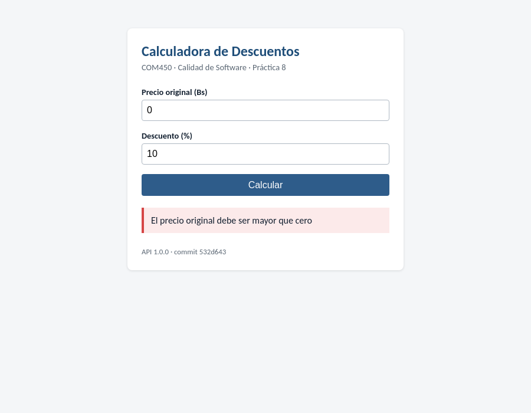
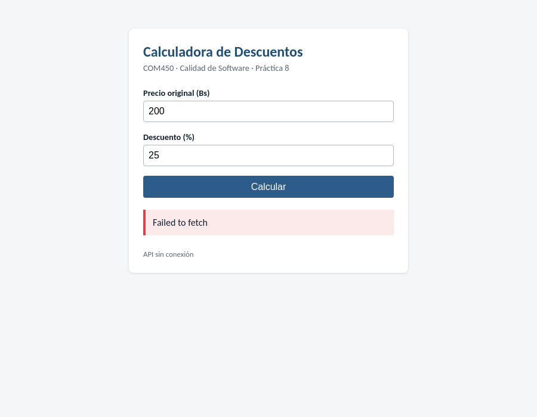

Versión final, verificada contra la aplicación real el 16/10/2026 (Práctica 9, COM450). Borrador generado con Claude (Opus 5.5) y corregido a mano: ver la tabla de verificación del informe.
La Calculadora de Descuentos es una página web que le dice cuánto va a pagar por un producto después de aplicarle un descuento. Usted escribe el precio en bolivianos (Bs) y el porcentaje de descuento, y la página le muestra el precio final. Sirve a cualquier persona que venda o compre con descuento; no hace falta saber de computación ni crear una cuenta.
La calculadora no tiene inicio de sesión, cuenta, historial, menú ni enlaces. El único botón es Calcular.
Abra en su navegador (Chrome, Edge o Firefox) la dirección https://descuentos-web-blush.vercel.app. Aparece esta pantalla:

Mire la línea pequeña del final (el pie de página). Si dice API seguido de un número de versión
(por ejemplo API 1.0.0 · commit 532d643; los números cambian cuando se actualiza la aplicación), la
calculadora está lista. Si dice API sin conexión, vaya a la sección 5.

33.33, no
33,33. Si usa coma, el campo la borra sin avisar: toma 3333 y el resultado sale mal
(Bs 2999,70 en lugar de Bs 30,00). En el descuento pasa lo mismo: 12,5 se lee como 125 y aparece el
mensaje de porcentaje fuera de rango; escriba 12.5. El resultado, en cambio, siempre se muestra con
coma.
Bs 150,00.Bs 1111,05.Bs 30,00; 0.05 con 10 % da 0,045 y se muestra Bs 0,05.Los errores salen en un recuadro rosado con borde rojo, debajo del botón Calcular.
| Mensaje | Por qué aparece | Qué hacer |
|---|---|---|
| El precio original debe ser mayor que cero | El precio es 0, es negativo (por ejemplo -5) o el campo está vacío. | Escriba un precio mayor que cero y pulse Calcular. |
| El porcentaje de descuento debe estar entre 0 y 100 | El descuento es negativo (-1) o mayor que 100 (150, 100.01). | Escriba un descuento entre 0 y 100 y pulse Calcular. |
| Failed to fetch (en inglés) | La calculadora no pudo comunicarse con el servidor que hace el cálculo. No es un error de sus números. | Vea la sección 5. |

El servidor que hace los cálculos no responde en este momento. Si pulsa Calcular así, aparece el mensaje Failed to fetch.

API sin conexión y mensaje Failed to fetch.Su internet funciona (si no, la página no se habría abierto): el problema está en el servidor. Espere uno o dos
minutos y recargue la página (tecla F5). Cuando el pie vuelva a mostrar API con un número
de versión, ya puede calcular.
1. ¿Puedo poner 0 % o 100 %?
Sí. Con un precio de 100, el 0 % da Bs 100,00 y el 100 % da Bs 0,00.
2. ¿Cómo escribo los centavos?
Con punto: 12.50. Con coma el resultado sale mal y la
página no avisa.
2b. Escribí 12,5 % y me dice que el descuento debe estar entre 0 y 100. ¿Por qué?
Porque la coma se
borra y queda 125. Escriba 12.5.
3. ¿Por qué el resultado no tiene puntos en los miles?
La calculadora siempre muestra el número
seguido, con coma y dos decimales: Bs 1111,05.
4. ¿Se guardan mis cálculos? ¿Necesito una cuenta?
No. No hay historial ni cuentas. Si necesita
conservar un resultado, anótelo.
5. Me salió «Failed to fetch». ¿Hice algo mal?
No. El servidor no respondió. Espere un poco y recargue
la página (sección 5).
33.33).| Lo que ve | Qué significa | Qué hacer |
|---|---|---|
Recuadro verde Precio final: Bs … | Cálculo correcto | Leer el resultado |
| El precio original debe ser mayor que cero | Precio 0, negativo o vacío | Poner un precio mayor que 0 |
| El porcentaje de descuento debe estar entre 0 y 100 | Descuento menor que 0 o mayor que 100 | Poner un descuento de 0 a 100 |
Failed to fetch / pie API sin conexión | El servidor no responde | Esperar y recargar (F5) |
Resultado: Bs delante, coma decimal, dos decimales, sin separador de miles, redondeo de la mitad hacia arriba. Dirección: https://descuentos-web-blush.vercel.app